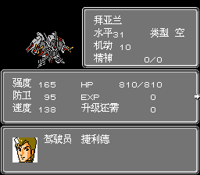
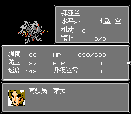

属性补正指的是机师对于驾驶的机体属性五围的加成（HP、机动、强度、防御、速度）。在机体状态栏上显示的参数已经是机体基础属性加上机师属性补正的结果。属性补正是驾驶员能力的标志，也就是说，相对于杂兵而言，驾驶同一机体，拥有属性补正的机师驾驶机体面板属性会更高。 此项属性补正一般是对于敌方机师而言的，也就是我方机师没有此项属性补正，因为我方机体在大多数情况下是唯一的，所以不需要与其他驾驶员区别驾驶能力。机师属性补正引起的机体面板属性差值如下图所示：


我们看到相同等级的捷利德与莱拉驾驶相同的机体拜亚兰，机体面板属性是不相同的。通过对比可以得知捷利德对于机体机动、强度、HP的补正是高于莱拉的，而莱拉的防卫、速度补正是高于捷利德的，由此区别了两位驾驶员的驾驶能力。
除敌方机师的属性补正之后，对于我方机师而言有一项属性补正那就是道具属性补正，我们可以通过商店购买相应的道具从而永久性的提升机体的属性。需要注意的是此项属性补正不是直接补正给机体的，而是对于人物能力的补正，也就是说当人物更换机体后道具补正的属性值还是存在的。但是对于特殊情况，例如我方人物的离队或者叛变，那么属性补正值会被清除。不过对于前者而言，此项补正可能会分配到后面新加入的人物上，这就看改版事件的具体写法了。